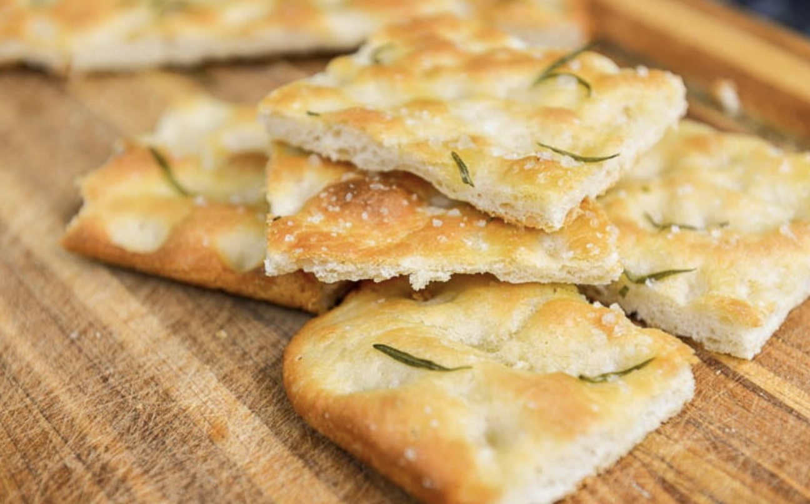

In Ancient Rome, panis focacius was a flat bread baked on the hearth. The word is derived from the Latin focus 'hearth, place for baking'. The basic recipe is thought by some to have originated with the Etruscans, but today it is widely associated with Ligurian cuisine. Outside Liguria, the word usually refers to the Genoese variants. In Genoese, it is called fügassa. In Barese, it is called fecàzze. The first attestation of the word focaccia appears in 1300. Focaccia is sometimes considered to be a kind of pizza,though focaccia is left to rise after being flattened, while pizza is baked immediately.
Focaccia has countless variations along the Ligurian coast, from the biscuit-hard focaccia secca to the corn-flour, oily, soft Voltri version, some bearing little resemblance to the Genovese version. An extreme example is focaccia col formaggio 'focaccia with cheese', also called focaccia di Recco or focaccia tipo Recco, which is made in Recco, near Genoa. This version has stracchino cheese sandwiched between two layers of paper-thin dough.Other versions have a surface covered with sauce or ham.
Focaccia genovese, marked by its finger-sized holes on its surface (ombrisalli in Genoese dialect)[14] is brushed or sprinkled with olive oil, coarse salt, and sometimes water before the final rise.In Genoa, focaccia is eaten in the morning at breakfast or during the day. It is often dipped in milk or in cappuccino at breakfast and eaten warm and wet.
